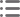
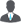

<mat-toolbar  class="fix-nav">
    <button type="button" mat-icon-button class="visible-md" (click)="toggleSidebar()">
        <mat-icon aria-label="Side nav toggle icon">menu</mat-icon>
    </button>
    <div class="nav-brand">
        Dashboard
    </div>
    <!-- <form class="hidden-sm" style="margin-left: 20px; margin-top: 5px">
        <mat-form-field>
            <input matInput [placeholder]="'Search'">
        </mat-form-field>
    </form> -->
    <!-- <span class="nav-spacer"></span>
    <input  placeholder="Search" value="Search" class="inputc">

    <span class="nav-spacer"></span>
    
    <span class="nav-spacer"></span>
    
    <span class="nav-spacer"></span>
     -->

    <span class="nav-spacer"></span>
    <!-- <button mat-button (click)="plan()" style="    margin-right: 10px;">
            12 Key Plan
        </button>
        <button mat-button (click)="drivers()" style="    margin-right: 10px;">
            drivers
            </button> -->
            <label>{{userName| titlecase}}</label>
            <button mat-icon-button [matMenuTriggerFor]="menu" aria-label="Example icon-button with a menu">
              <mat-icon>more_vert</mat-icon>
            </button>
            <mat-menu #menu="matMenu">
              <button mat-menu-item (click)="home()">
                <mat-icon>dashboard</mat-icon>
                <span>Home</span>
              </button>
              <button *ngIf="role === 'admin'" mat-menu-item (click)="userRedirect()">
                <mat-icon>vpn_key</mat-icon>
                <span>Kpi Journey</span>
              </button>

              <button mat-menu-item (click)="onLoggedout()">
                <mat-icon>vpn_key</mat-icon>
                <span>Logout</span>
              </button>
            </mat-menu>
    <!-- <button mat-icon-button >
            
    </button> -->
</mat-toolbar>
